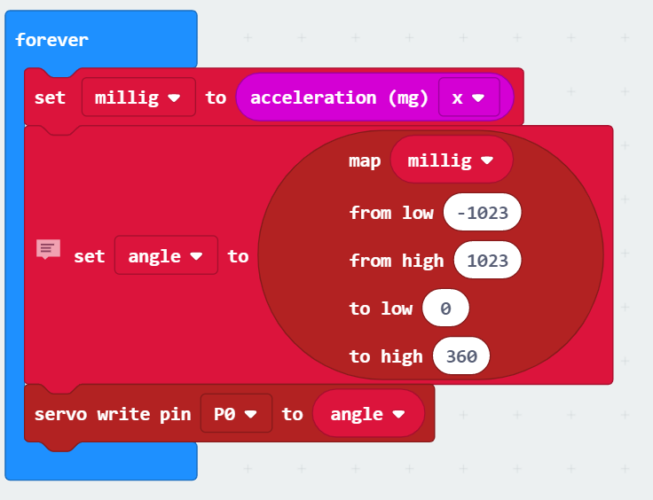

Nicks Website
Visit how the microbit was made here
Welcome to my website
Below will be the micro.bit project I did with my group and all about it
The micro.bit code itself

What we did
So basically, the plan was to make a remote controler for a blimp so we had to get the remote to control the servos which would control the propellers.
How it worked?
So to code everything we used the micro.bit website. We got it to work in a way where which ever way the micro.bit point, the servos would move in that direction.
The troubles we had
We had a few troubles here and there but the main problem we had was to get the microbit to move the servos in the direction that you want it to.